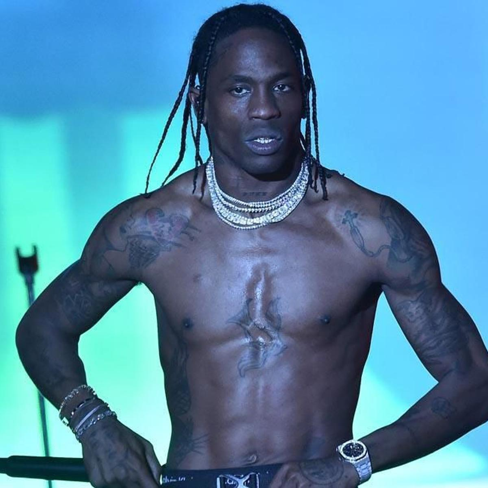
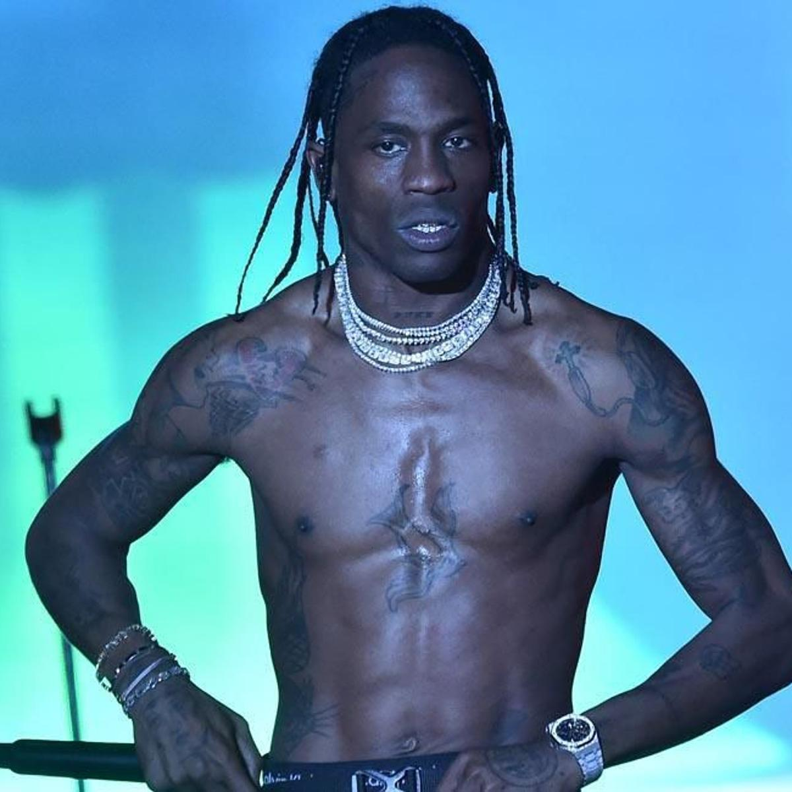

Na primeira fase aparecerão 4 artistas e apenas duas músicas,
seu objetivo é acertar os artistas que cantam essas música, já
na segunda fase serão 3 músicas e 4 artistas, vamos ver se você conhece elas. OBS: Algumas músicas tem o início mais demorado então para ter
certeza dos artista ouça até 1:30 min.
 
play_circle_filled

play_circle_filled